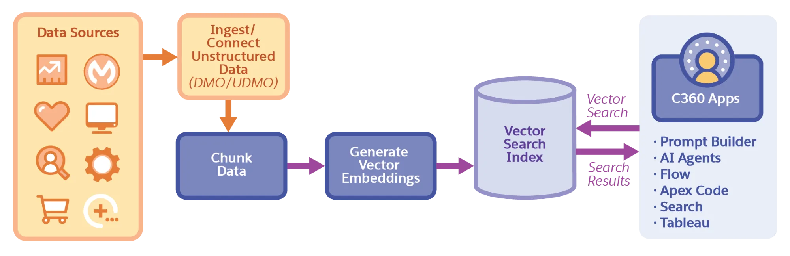
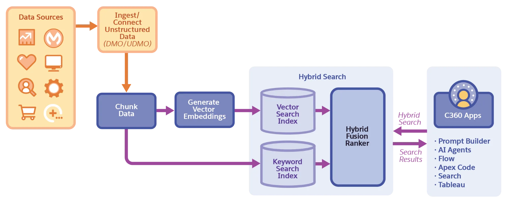

Search Indexes
in Data 360
A complete guide to the three search index types in Data 360 — Vector, Hybrid, and Enriched — and how they power accurate, relevant AI grounding across Agentforce, Prompt Builder, Flow, Apex Code, Tableau, and more.
Why Search Indexes Matter for AI Grounding
Grounding AI on customer-specific data dramatically enhances the value of generative AI across applications, analytics, and automation tools on the Salesforce Platform. By using the user's query to retrieve relevant CRM data, applications like Agentforce, Tableau, and Flow Builder ensure that AI outputs are finely tuned to user intent — not just general training knowledge.
Data 360 lets you build search indexes on any data, including unstructured data in knowledge bases. These indexes make your organisation's unique data searchable and retrievable for AI grounding workflows.
The Common Pipeline: From Data to Index
Regardless of which index type you choose, the data preparation pipeline follows the same initial steps:
- Bring data into Data 360 from any source
- Data 360 maps it to standard Data Model Objects (DMO) or Unstructured Data Model Objects (UDMO)
- Data is chunked — split into meaningful, searchable segments
- Vector embeddings are generated from the chunks — numerical representations that capture semantic meaning
- A search index is built so C360 applications can query it
Search indexes in Data 360 support unstructured data (knowledge base articles, documents, PDFs), semi-structured data (JSON, XML), and structured data (CRM records). This includes videos, audio, and call transcripts for vector search.
Vector Search Index
Semantic similarity search. Best for long-form, general queries where meaning matters more than exact words.
Hybrid Search Index
Combines vector search + keyword search via a fusion ranker. Best for queries mixing general intent with specific terms.
Enriched Search Index
Enhances vector or hybrid search with LLM-generated metadata, questions, and summaries. Best for highest retrieval accuracy.
Vector Search Index
Vector search — also known as semantic search — retrieves data based on meaning, not just keywords. It finds chunks that are semantically close to the user's query, even when the exact words differ. This makes it ideal for natural language questions and long-form queries.
How Vector Search Works
Vector search retrieval works by:
- Chunking the source data into manageable segments
- Creating vector embeddings for each chunk — numerical vectors in high-dimensional space where semantically similar text clusters together
- When a query arrives, generating an embedding for the query
- Finding chunks whose embeddings are closest in vector space to the query embedding (measured by cosine similarity or similar metrics)
- Returning chunks with the highest vector search score
Architecture Diagram

Example SQL Query
Data 360 exposes search indexes via SQL functions. Here's a vector search query against a Wikipedia article index, retrieving the top 3 most semantically similar chunks:
SELECT c.Chunk__c, v.score__c
FROM vector_search(
TABLE(WikiArticle_c_vector_search_2_index__dlm),
'how does Google Chrome internet browser work',
'',
100
) AS v
JOIN WikiArticle_c_vector_search_2_chunk__dlm AS c
ON v.SourceRecordId__c = c.RecordId__c
ORDER BY v.score__c DESC
LIMIT 3;
sqlThe result returns chunks ordered by descending vector search score — the top results are the chunks most semantically similar to the query, even if they don't contain the exact words "Google Chrome".
When to Use Vector Search
- User queries are long-form (more than 5 words) asking for general information
- Queries use natural language where the exact words may not appear in the source data
- Data types include videos, audio, call transcripts — not just text
- You need a simpler, faster setup than hybrid search
Vector search may underperform when queries include specific technical terms, product codes, or domain vocabulary that must match exactly. For those cases, use Hybrid Search instead.
Chapter 1 — Key Takeaways
score__c — higher = more semantically similarHybrid Search Index
Hybrid search combines the semantic power of vector search with the precision of keyword search, merging both result sets through a fusion ranker. The result: relevant results even when the query contains specific technical terms that pure vector search might miss.
How Hybrid Search Works
Hybrid search builds and queries two indexes simultaneously:
- Vector Search Index — captures semantic similarity (same pipeline as Chapter 1)
- Keyword Search Index — captures exact keyword matches (similar to traditional full-text search)
Results from both indexes are merged and re-ranked by a Hybrid Fusion Ranker that combines both scores into a single hybrid_score__c.
Architecture Diagram

The Fusion Ranker
The Hybrid Fusion Ranker is the core innovation of hybrid search. It:
- Takes results from both the vector index and the keyword index
- Combines the scores using a function optimised on internal benchmarks for a variety of search-based tasks
- Training and evaluation data is based on actual captured queries from Einstein Search and Gen-AI applications like Einstein Search Answers
- Outputs a unified hybrid_score__c that represents the most relevant results overall
Example SQL Query
The hybrid search SQL function returns three score fields — hybrid, keyword, and vector — giving full visibility into how the ranking was computed:
SELECT
c.Chunk__c,
h.hybrid_score__c,
h.keyword_score__c,
h.vector_score__c
FROM hybrid_search(
TABLE(WikiArticle_c_hybrid_search_2_index__dlm),
'how does Google Chrome internet browser work?',
'',
100
) AS h
JOIN WikiArticle_c_hybrid_search_2_chunk__dlm AS c
ON h.SourceRecordId__c = c.RecordId__c
ORDER BY h.hybrid_score__c DESC
LIMIT 2;
sqlFor the same Google Chrome query used in the vector search example, hybrid search is more powerful — it returns chunks that include both:
- Information about how browsers work (semantic match via vector)
- Specific details about Google Chrome (keyword match via keyword index)
When to Use Hybrid Search
- Queries mix general intent with specific terms (product names, codes, technical vocabulary)
- You need the best of both semantic and exact keyword matching
- End users' queries vary widely in length and specificity
- Achieving highest relevance matters more than index build simplicity
For the query "how does Google Chrome internet browser work?" — vector search finds chunks about browser mechanics generally. Hybrid search finds those plus chunks specifically about Chrome, because the keyword index catches the exact match on "Chrome". Hybrid search gives the LLM better grounding for domain-specific queries.
Chapter 2 — Key Takeaways
hybrid_score__c, keyword_score__c, vector_score__cEnriched Search Index
The Enriched Search Index takes a vector or hybrid search index and enhances it with LLM-generated metadata — automatically extracting keywords, entities, topic overviews, questions answered by the content, and summaries. This significantly boosts retrieval accuracy without manual curation.
What Enrichment Adds
When you enable enriched chunks during search index creation, Data 360 uses an LLM to automatically generate additional content that enriches each chunk. This acts as an alternative to manual curation, making it much easier for AI agents to identify the most relevant information.
Three Chunk Types per Original Chunk
For every original content chunk, the enrichment process produces three separate chunks:
| Chunk Type | ChunkProcessingType__c | Contents | Purpose |
|---|---|---|---|
| Plain Chunk | PLAIN |
The original chunk text, unchanged | Standard semantic and keyword matching |
| Metadata Chunk | METADATA |
LLM-extracted keywords, entities, topics, and content summary | Boosts retrieval for queries matching key concepts or named entities |
| Question Chunk | QUESTION |
LLM-generated questions that this chunk can answer | Directly matches user questions to relevant content even when wording differs |
A user might ask "What does Multi-Terrain Select do?" The plain chunk might contain "The Multi-Terrain Select system provides..." — a semantic match, but not perfect. The question chunk explicitly contains "What does Multi-Terrain Select do?" — a direct match that improves retrieval precision significantly.
How to Enable Enrichment
- When creating a vector search index or hybrid search index, toggle on enriched chunks
- Data 360 builds the index and generates all three chunk types for each original chunk
- Create retrievers in AI Models specifically for enriched search indexes (standard retrievers don't use the enriched chunks)
- Use the enriched retriever in prompt templates and agents for RAG and agent workflows
Example SQL Query — Enriched Hybrid Search
The enriched search query uses a UNION to search all three chunk types simultaneously, then join back to the original source records:
SELECT
chunk."Chunk__c" AS Chunk,
sf."hybrid_score__c" AS hybrid_score,
sf."ChunkProcessingType__c",
chunk."ChunkType__c"
FROM (
SELECT * FROM hybrid_search(
TABLE("RagFileUDMO_Enriched_index__dlm"),
'What is the purpose of Multi-Terrain Select system?',
'ChunkProcessingType__c = ''PLAIN''', 10)
UNION
SELECT * FROM hybrid_search(
TABLE("RagFileUDMO_Enriched_index__dlm"),
'What is the purpose of Multi-Terrain Select system?',
'ChunkProcessingType__c = ''QUESTION''', 10)
UNION
SELECT * FROM hybrid_search(
TABLE("RagFileUDMO_Enriched_index__dlm"),
'What is the purpose of Multi-Terrain Select system?',
'ChunkProcessingType__c = ''METADATA''', 10)
) AS sf
INNER JOIN "RagFileUDMO_Enriched_chunk__dlm" AS chunk
ON chunk."RecordId__c" = sf."RecordId__c"
ORDER BY sf."hybrid_score__c" DESC;
sqlThe result includes all three chunk variants for the best-matching content — giving the LLM the original text, enriched metadata, and directly relevant questions together.
When to Use Enriched Search
- You need highest retrieval accuracy and the cost of additional LLM-generated chunks is justified
- Your knowledge base covers complex domains with specialised terminology
- Questions from end users vary widely in phrasing but refer to the same underlying content
- You want to eliminate manual metadata tagging of documents
Enriched search consumes Flex Credits in Data 360 because it uses LLM calls to generate the additional chunk types. Weigh the higher retrieval accuracy against the additional cost. It is most valuable where retrieval errors have a measurable business impact.
Chapter 3 — Key Takeaways
Choosing the Right
Search Index
With three index types available, the right choice depends on your use case, data, and the nature of end-user queries. Use this chapter as a decision guide.
Decision Framework
| Scenario | Recommended Index | Reasoning |
|---|---|---|
| Users ask long, general information questions (>5 words, no specific terms) | Vector Search | Semantic matching handles natural language well; faster and cheaper to build |
| Queries mix general intent with specific product names, codes, or technical vocabulary | Hybrid Search | Fusion ranker combines semantic + keyword for highest relevance |
| Complex domain knowledge base; questions vary in phrasing; accuracy improvement is high value | Enriched Search | LLM-generated metadata and question chunks directly improve match quality |
| Budget-constrained; quick start needed | Vector Search | Simpler setup, no Flex Credit cost for enrichment, good accuracy for general queries |
| Best possible grounding accuracy for high-stakes agent responses | Enriched Hybrid Search | Combines hybrid's dual indexing with enrichment's LLM-generated context |
Score Fields at a Glance
| Index Type | Score Field(s) | SQL Function |
|---|---|---|
| Vector Search | score__c | vector_search() |
| Hybrid Search | hybrid_score__c, keyword_score__c, vector_score__c | hybrid_search() |
| Enriched | Same as base index + ChunkProcessingType__c, ChunkType__c | Same + UNION across chunk types |
All three index types are queryable from: Prompt Builder (for RAG-grounded prompts), AI Agents / Agentforce (via retrievers), Flow Builder (HTTP callout or action), Apex Code (SOSL/SOQL-like interface), Search (Einstein Search), and Tableau (analytics grounding).
Quiz
Quick Reference
All Three Index Types Compared
| Feature | Vector Search | Hybrid Search | Enriched |
|---|---|---|---|
| Indexes built | Vector only | Vector + Keyword | Adds to either |
| Ranking | Vector score | Fusion ranker | Hybrid/vector + chunk type filter |
| Extra LLM calls | No | No | Yes (generates enriched chunks) |
| Flex Credits cost | Standard | Standard | Higher (Flex Credits) |
| Best for | Long general queries | Mixed intent + specific terms | Complex domains, high accuracy |
| SQL function | vector_search() | hybrid_search() | hybrid_search() + UNION |
| Special retriever | No | No | Yes — AI Models retriever |
Key Terms
Recommended Resources
- Salesforce Help: Unstructured Data in Data 360
- Salesforce Help: Vector Search
- Salesforce Help: Hybrid Search
- Salesforce Engineering Blog: How Data Cloud Hybrid Search Combines Keyword and Vector Retrieval to Elevate the Search Experience
- Salesforce Help: Data 360 Glossary of Terms